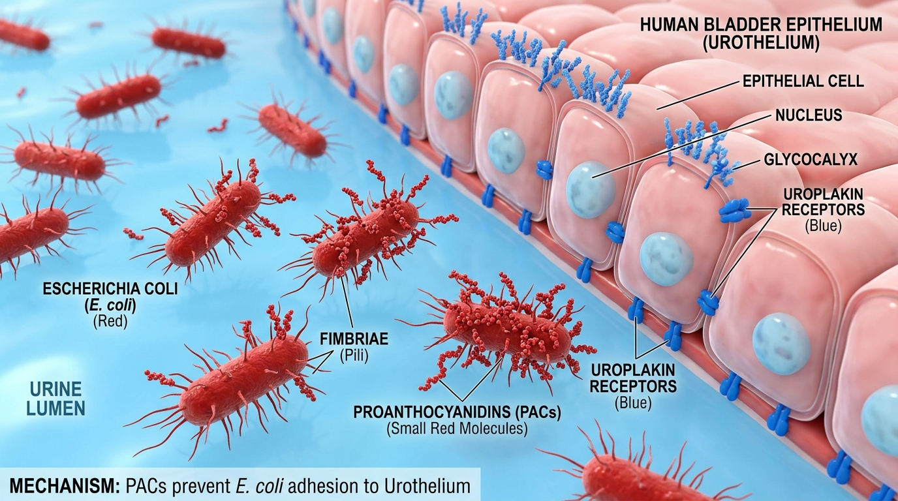
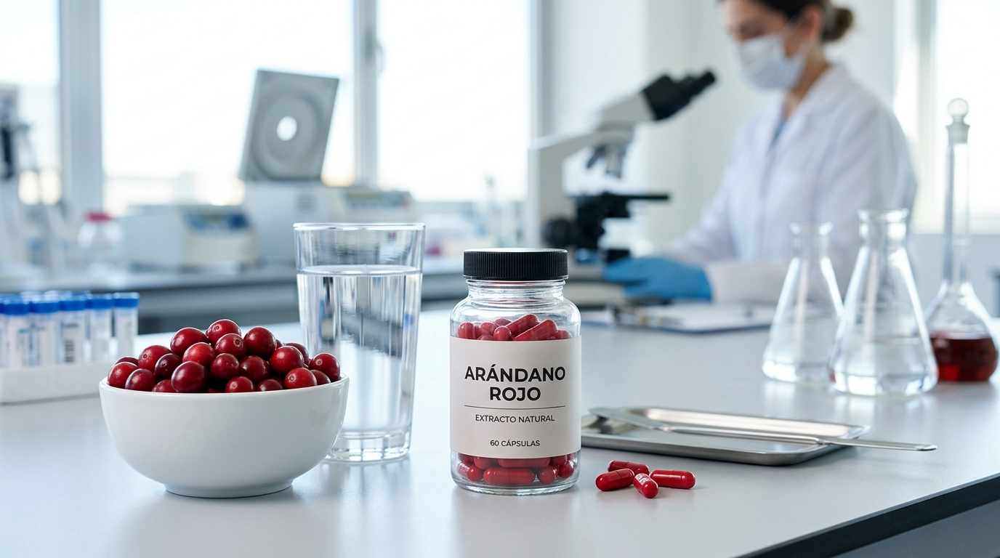

Las infecciones de las vías urinarias, especialmente la molesta y recurrente cistitis, representan una de las principales razones por las que las personas acuden al médico a nivel global. Durante años se ha promovido el remedio tradicional de tomar jugo de arándano rojo como escudo definitivo. Sin embargo, la ciencia moderna es clara: no basta con consumir la fruta ocasionalmente; el verdadero efecto protector requiere una dosis exacta, cuantificada y clínicamente probada de 36 mg de Proantocianidinas (PACs).
En este artículo, te explicamos con palabras sencillas cómo funciona este mecanismo a nivel microscópico, por qué tu cuerpo no se beneficia del consumo informal de arándanos y cómo la sinergia médica de Cysprex® de Profarnova ofrece la solución de precisión definitiva.
El Campo de Batalla: Cómo la bacteria E. Coli invade tu vejiga
Para entender el valor de las proantocianidinas, primero debemos entender al enemigo. Más del 80% de las infecciones urinarias recurrentes son causadas por una bacteria llamada Escherichia coli uropatógena (UPEC). Este microorganismo no ingresa de forma pasiva; cuenta en su superficie con pequeñas vellosidades parecidas a "garras" llamadas fimbrias P.
Estas garras moleculares se anclan con gran fuerza a los receptores presentes en la pared de tu vejiga (las células uroepiteliales). Al fijarse allí, las bacterias logran multiplicarse rápidamente y crear biopelículas o biofilmes, una especie de escudo protector que las oculta del sistema inmunológico y dificulta que los antibióticos normales las destruyan, provocando que las infecciones vuelvan una y otra vez.

Imagen 1: Bloqueo mecánico y estérico ejercido por las PACs de Tipo A sobre las bacterias para evitar el contacto celular.
El Escudo Mecánico: PACs Tipo A, la llave de bloqueo exacta
El arándano rojo americano (Vaccinium macrocarpon) destaca por encima de cualquier otra fruta por ser rico en un compuesto específico: las Proantocianidinas de Tipo A (PACs Tipo A). Estos compuestos poseen una estructura química rígida muy particular (enlaces éter duales) que actúa como un recubrimiento protector.
En lugar de matar a la bacteria —lo cual podría dañar la flora vaginal o digestiva sana—, las PACs Tipo A se adhieren físicamente a las "garras" (fimbrias P) de la E. coli. Al cubrirlas, impiden de forma mecánica que estas se anclen a la pared de la vejiga. La bacteria queda suspendida e incapacitada en el flujo de la orina, siendo expulsada del cuerpo de forma completamente natural en cada micción.
"El efecto de las PACs es puramente físico y de arrastre: bloquean las garras de la bacteria para que la orina la barra de tu cuerpo, sin crear resistencia a los antibióticos."
El Gran Mito: Por qué el jugo de arándano o los suplementos sin medir no funcionan
Existe una creencia muy común de que tomar jugos comerciales, comer la fruta seca o comprar cualquier extracto de arándano en farmacias te protegerá. Esto es, lamentablemente, un mito por tres grandes razones:
- Procesamiento y Calor: Al elaborar jugos comerciales, la pasteurización y los procesos industriales destruyen la estructura molecular sensible de las PACs Tipo A, reduciendo su efectividad casi a cero.
- Exceso de Azúcar y Fructosa: Los jugos industriales suelen cargarse con azúcares añadidos que alimentan a los microorganismos patógenos y alteran el pH natural del tracto digestivo y urinario.
- Métodos de Medición Obsoletos: Muchos suplementos genéricos afirman tener "altas concentraciones", pero sus métodos de medición analítica están desactualizados y pueden inflar artificialmente la concentración real hasta un 500%.
Para solucionar esta confusión científica, autoridades como la AFSSA de Francia establecieron de forma definitiva que se requiere consumir una **dosis diaria mínima de 36 mg de PACs puras**, medidas bajo el estricto método analítico internacional **BL-DMAC** (considerado el estándar de oro médico), para lograr que la orina adquiera suficiente capacidad antiadhesiva que dure todo el día.

Imagen 2: Las cápsulas estandarizadas garantizan la estabilidad y biodisponibilidad de los 36 mg de PACs Activas frente a jugos informales.
Cysprex®: La Fórmula Estandarizada que Sí Funciona
Conscientes de esta brecha entre la ingesta informal y el rigor médico, en Profarnova formulamos Cysprex®. Cada cápsula de Cysprex® garantiza exactamente la dosis terapéutica de 36 mg de PACs de Tipo A estandarizadas bajo el estándar de medición DMAC.
Pero no nos detuvimos ahí. Para lograr la máxima salud urológica, Cysprex® combina esta dosis con dos poderosos aliados:
- Vitamina C (Ácido Ascórbico): Acidifica la orina creando un ambiente desfavorable para que las bacterias sobrevivan y fortifica el sistema inmune local.
- Resveratrol: Actúa como un potente antiinflamatorio celular, calmando la inflamación y dolor de la vejiga causados por ataques recurrentes y ayudando a regenerar los tejidos.
Al no actuar destruyendo bacterias, sino mediante un mecanismo de arrastre mecánico, las bacterias no pueden generar resistencia a Cysprex®, lo que lo convierte en la terapia ideal a largo plazo para romper el círculo vicioso del uso constante de antibióticos.
🧪 Sinergia Clínica de Cysprex®
La combinación de 36 mg de PACs, Resveratrol y Vitamina C de Cysprex® bloquea la fijación bacteriana por hasta 12 horas seguidas por dosis, desinflama la mucosa de la vejiga y evita la recurrencia de la cistitis crónica de manera segura.
¿Cómo se debe tomar? Pautas de administración
Para obtener los máximos resultados protectores y regeneradores, te recomendamos seguir los siguientes esquemas sugeridos:
- Fase Activa o Molestia Aguda: Tomar 2 cápsulas al día (1 por la mañana y 1 por la noche) durante 7 a 10 días, idealmente como coadyuvante con el tratamiento médico.
- Prevención y Recaídas: Tomar 1 cápsula diaria por las noches durante un periodo continuo de 3 a 6 meses.
Nota: Mantener un consumo abundante de agua durante el día es fundamental para potenciar el arrastre físico de las bacterias que las PACs han desprendido.
Fuentes e Investigación Científica
Nuestras formulaciones están basadas en la investigación científica más rigurosa a nivel global. Haz clic en el botón de abajo para desplegar las fuentes médicas de este artículo.
- Revista Médica del Hospital José Carrasco Arteaga (HJCA / IESS): El arándano como terapia adyuvante en la infección urinaria recurrente: una revisión bibliográfica. Descargar artículo clínico
- Revista Colombiana de Nefrología (SciELO): Extracto dosificado de arándano rojo: una terapia eficaz para la cistitis recurrente por Escherichia coli. Ver artículo en SciELO
- National Library of Medicine (PMC9127832): Estudio sobre la dosificación de 36 mg de PACs y bioactividad antiadhesiva urinaria sostenida. Ver artículo en PMC
- National Library of Medicine (PMC2873556): Estudio comparativo sobre la medición por el método DMAC y eficacia de formulaciones. Ver estudio analítico en PMC
- ResearchGate Publications: Cranberry Proanthocyanidins (PACs) in Bacterial Anti-Adhesion. Ver publicación en ResearchGate
- ACS Publications (Journal of Agricultural and Food Chemistry): Evaluación de la bioactividad antiadhesiva y cuantificación de PACs. Ver publicación en ACS